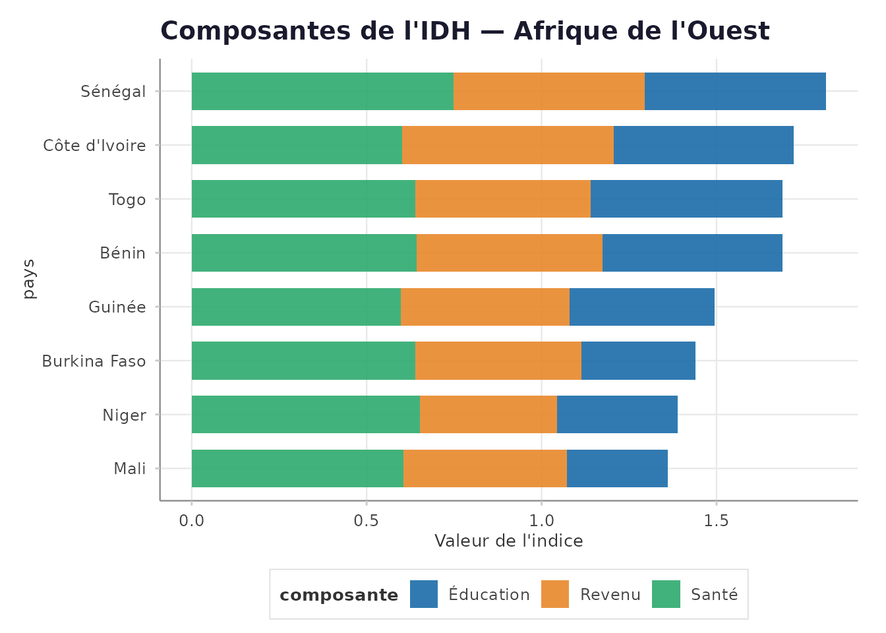
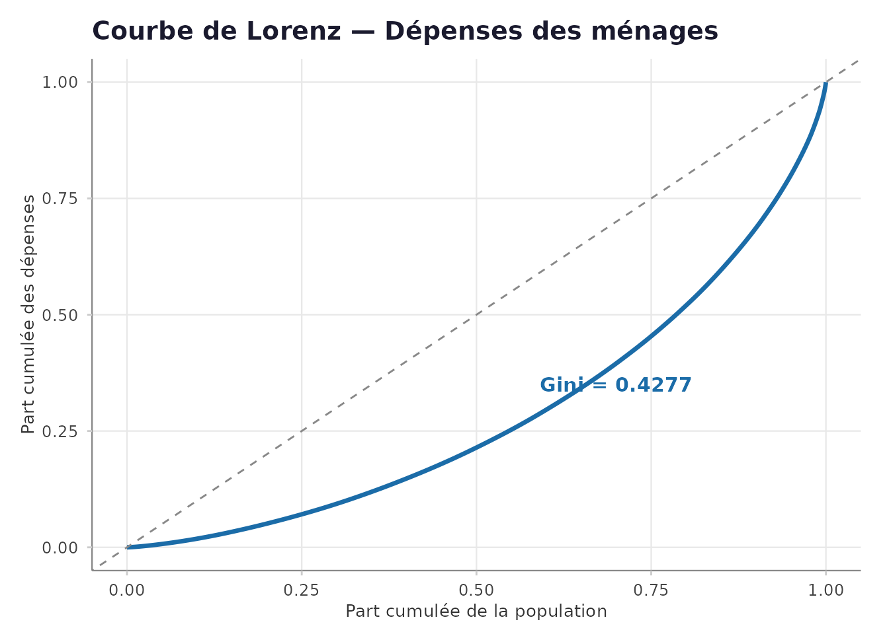

Calcul des indicateurs ODD : IDH, IPM et inégalités
Source:vignettes/03-indicateurs-odd.Rmd
03-indicateurs-odd.RmdIntroduction
Cette vignette présente le calcul des indicateurs de développement humain conformes aux méthodologies internationales PNUD/OPHI, directement utilisables pour les rapports nationaux sur les ODD.
1. Indice de Développement Humain (IDH)
Calcul national
idh_benin <- calcul_idh(
esperance_vie = 61.8,
annees_scol_moy = 4.5,
annees_scol_att = 13.1,
rnb_habitant = 3360,
annee = 2023
)
cat("IDH Bénin 2023 :\n")
#> IDH Bénin 2023 :
cat(" IDH global :", idh_benin$idh, "\n")
#> IDH global : 0.56
cat(" Santé :", idh_benin$indice_sante, "\n")
#> Santé : 0.6431
cat(" Éducation :", idh_benin$indice_education, "\n")
#> Éducation : 0.5139
cat(" Revenu :", idh_benin$indice_revenu, "\n")
#> Revenu : 0.5309
cat(" Catégorie :", idh_benin$categorie, "\n")
#> Catégorie : MoyenComparaison régionale
pays_afrique <- tibble::tibble(
pays = c("Bénin", "Burkina Faso", "Sénégal",
"Côte d'Ivoire", "Mali", "Niger",
"Togo", "Guinée"),
esperance_vie = c(61.8, 61.6, 68.7, 59.1, 59.3, 62.4, 61.5, 58.9),
annees_scol_moy = c(4.5, 2.0, 3.5, 5.3, 2.4, 2.1, 5.5, 3.1),
annees_scol_att = c(13.1, 9.3, 14.5, 12.1, 7.5, 9.9, 13.1, 11.2),
rnb_habitant = c(3360, 2310, 3690, 5510, 2200, 1340, 2780, 2420)
)
idh_regional <- pays_afrique |>
dplyr::rowwise() |>
dplyr::mutate(
res = list(calcul_idh(esperance_vie, annees_scol_moy,
annees_scol_att, rnb_habitant)),
idh = res$idh,
indice_sante = res$indice_sante,
indice_educ = res$indice_education,
indice_revenu = res$indice_revenu,
categorie = res$categorie
) |>
dplyr::select(-res) |>
dplyr::ungroup() |>
dplyr::arrange(dplyr::desc(idh))
knitr::kable(
idh_regional[, c("pays", "idh", "categorie",
"indice_sante", "indice_educ", "indice_revenu")],
caption = "IDH — Comparaison régionale Afrique de l'Ouest",
digits = 3
)| pays | idh | categorie | indice_sante | indice_educ | indice_revenu |
|---|---|---|---|---|---|
| Sénégal | 0.596 | Moyen | 0.749 | 0.519 | 0.545 |
| Côte d’Ivoire | 0.572 | Moyen | 0.602 | 0.513 | 0.606 |
| Bénin | 0.560 | Moyen | 0.643 | 0.514 | 0.531 |
| Togo | 0.560 | Moyen | 0.638 | 0.547 | 0.502 |
| Guinée | 0.492 | Faible | 0.599 | 0.414 | 0.481 |
| Burkina Faso | 0.462 | Faible | 0.640 | 0.325 | 0.474 |
| Niger | 0.445 | Faible | 0.652 | 0.345 | 0.392 |
| Mali | 0.433 | Faible | 0.605 | 0.288 | 0.467 |
idh_long <- idh_regional |>
tidyr::pivot_longer(
cols = c(indice_sante, indice_educ, indice_revenu),
names_to = "composante",
values_to = "valeur"
) |>
dplyr::mutate(
composante = dplyr::recode(composante,
indice_sante = "Santé",
indice_educ = "Éducation",
indice_revenu = "Revenu"
),
pays = forcats::fct_reorder(pays, idh)
)
graphique_barres(
idh_long,
var_x = "pays",
var_y = "valeur",
var_groupe = "composante",
position = "stack",
titre = "Composantes de l'IDH — Afrique de l'Ouest",
label_y = "Valeur de l'indice"
) + ggplot2::coord_flip()
IDH et composantes — Afrique de l’Ouest
2. Indice de Pauvreté Multidimensionnelle (IPM)
set.seed(2024)
n <- 3000
donnees_menages <- tibble::tibble(
id_menage = 1:n,
region = sample(c("Nord", "Sud", "Est", "Ouest"), n, replace = TRUE),
milieu = sample(c("Urbain", "Rural"), n, replace = TRUE,
prob = c(0.35, 0.65)),
poids = runif(n, 0.5, 2.5),
# Dimension Santé
malnutrition = sample(c(0L, 1L), n, replace = TRUE, prob = c(0.72, 0.28)),
mortalite_enf = sample(c(0L, 1L), n, replace = TRUE, prob = c(0.88, 0.12)),
# Dimension Éducation
scol_adulte = sample(c(0L, 1L), n, replace = TRUE, prob = c(0.62, 0.38)),
scol_enfants = sample(c(0L, 1L), n, replace = TRUE, prob = c(0.71, 0.29)),
# Dimension Niveau de vie
electricite = sample(c(0L, 1L), n, replace = TRUE, prob = c(0.52, 0.48)),
eau_potable = sample(c(0L, 1L), n, replace = TRUE, prob = c(0.58, 0.42)),
assainissement = sample(c(0L, 1L), n, replace = TRUE, prob = c(0.55, 0.45)),
combustible = sample(c(0L, 1L), n, replace = TRUE, prob = c(0.60, 0.40)),
logement = sample(c(0L, 1L), n, replace = TRUE, prob = c(0.75, 0.25)),
actifs = sample(c(0L, 1L), n, replace = TRUE, prob = c(0.68, 0.32))
)
# Définition des dimensions IPM standard OPHI
indicateurs_ipm <- list(
sante = c("malnutrition", "mortalite_enf"),
education = c("scol_adulte", "scol_enfants"),
niveau_vie = c("electricite", "eau_potable", "assainissement",
"combustible", "logement", "actifs")
)
resultat_ipm <- calcul_ipm(
donnees_menages,
indicateurs = indicateurs_ipm,
seuil_pauvrete = 1/3,
var_poids = "poids"
)
contrib_df <- tibble::tibble(
dimension = names(resultat_ipm$contributions),
contribution = resultat_ipm$contributions
)
knitr::kable(
contrib_df,
caption = "Contributions des dimensions à l'IPM",
col.names = c("Dimension", "Contribution (%)")
)| Dimension | Contribution (%) |
|---|---|
| sante | 25.43 |
| education | 39.06 |
| niveau_vie | 35.52 |
IPM par région
donnees_enrichies <- resultat_ipm$donnees_enrichies
ipm_region <- donnees_enrichies |>
dplyr::group_by(region) |>
dplyr::summarise(
n_menages = dplyr::n(),
taux_pauvrete_md = round(mean(.est_pauvre_multi) * 100, 1),
score_moyen = round(mean(.score_privation), 3),
.groups = "drop"
) |>
dplyr::arrange(dplyr::desc(taux_pauvrete_md))
knitr::kable(
ipm_region,
caption = "Pauvreté multidimensionnelle par région",
col.names = c("Région", "Ménages", "Taux pauvreté (%)", "Score moyen")
)| Région | Ménages | Taux pauvreté (%) | Score moyen |
|---|---|---|---|
| Nord | 779 | 47.5 | 0.300 |
| Ouest | 752 | 47.2 | 0.307 |
| Sud | 753 | 46.9 | 0.309 |
| Est | 716 | 45.8 | 0.303 |
3. Inégalités
set.seed(2024)
donnees_revenus <- tibble::tibble(
menage = 1:2000,
milieu = sample(c("Urbain", "Rural"), 2000, replace = TRUE,
prob = c(0.4, 0.6)),
quintile = sample(1:5, 2000, replace = TRUE),
depense_totale = exp(rnorm(2000, log(500000), 0.8)),
poids = runif(2000, 0.5, 2.0)
)
inegalites <- decomposer_inegalite(
donnees_revenus,
var_revenu = "depense_totale",
var_groupe = "milieu",
var_poids = "poids"
)
knitr::kable(
inegalites$decomposition,
caption = "Décomposition des inégalités par milieu",
digits = 3
)| groupe | n | moyenne | gini_interne | part_pop | part_revenu |
|---|---|---|---|---|---|
| Urbain | 795 | 686206.9 | 0.437 | 0.392 | 0.395 |
| Rural | 1205 | 677273.3 | 0.421 | 0.608 | 0.605 |
# Construction manuelle de la courbe de Lorenz
x_sorted <- sort(donnees_revenus$depense_totale)
n <- length(x_sorted)
lorenz_df <- tibble::tibble(
pop_cumulee = c(0, seq_len(n) / n),
rev_cumulee = c(0, cumsum(x_sorted) / sum(x_sorted))
)
ggplot2::ggplot(lorenz_df, ggplot2::aes(pop_cumulee, rev_cumulee)) +
ggplot2::geom_line(color = "#1B6CA8", linewidth = 1.2) +
ggplot2::geom_abline(intercept = 0, slope = 1,
linetype = "dashed", color = "#888888") +
ggplot2::annotate("text", x = 0.7, y = 0.35,
label = paste0("Gini = ", inegalites$gini),
color = "#1B6CA8", fontface = "bold", size = 4) +
ggplot2::labs(
title = "Courbe de Lorenz — Dépenses des ménages",
x = "Part cumulée de la population",
y = "Part cumulée des dépenses"
) +
theme_ins()
Courbe de Lorenz — Dépenses des ménages
Synthèse
tibble::tibble(
Indicateur = c("IDH Bénin 2023", "IPM (H × A)", "Incidence (H)",
"Intensité (A)", "Gini"),
Valeur = c(
idh_benin$idh,
resultat_ipm$ipm,
round(resultat_ipm$H, 3),
round(resultat_ipm$A, 3),
inegalites$gini
),
Interpretation = c(
idh_benin$categorie,
paste0(round(resultat_ipm$ipm * 100, 1), "% de pauvreté multidim."),
paste0(round(resultat_ipm$H * 100, 1), "% de ménages pauvres"),
paste0(round(resultat_ipm$A * 100, 1), "% de privations en moyenne"),
dplyr::case_when(
inegalites$gini < 0.3 ~ "Inégalités faibles",
inegalites$gini < 0.4 ~ "Inégalités modérées",
TRUE ~ "Inégalités élevées"
)
)
) |>
knitr::kable(caption = "Tableau de bord des indicateurs ODD")| Indicateur | Valeur | Interpretation |
|---|---|---|
| IDH Bénin 2023 | 0.5600 | Moyen |
| IPM (H × A) | 0.2066 | 20.7% de pauvreté multidim. |
| Incidence (H) | 0.4700 | 47% de ménages pauvres |
| Intensité (A) | 0.4400 | 44% de privations en moyenne |
| Gini | 0.4277 | Inégalités élevées |